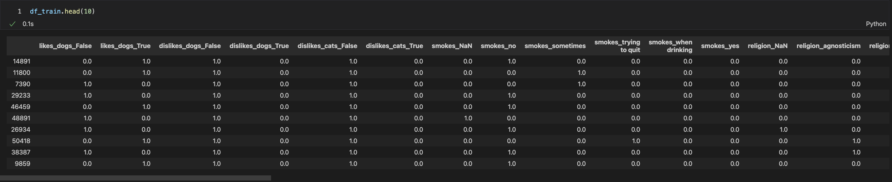

Preprocessing
First I convert my set of features to lists
cat_features = list ( cat_features )
num_features = list ( num_features )
features = cat_features + num_features
print ( f "cat_features: { cat_features } " )
print ( f "num_features: { num_features } " )
Train/Test Split
The train/test split is as usual, note the stratify option since the dataset is somewhat imbalanced.
from sklearn.model_selection import train_test_split
df_train , df_test , y_train , y_test = train_test_split ( df [ features ], df [ target ], train_size = 0.6 , stratify = df [ target ], random_state = SEED )
df_train . shape , df_test . shape
Encooding
In the following I apply encoders/scalers using a somewhat different approach than used to date. Here I wrap the output of the encoder/scaler into a dataframe.
This will allow me to pass a dataframe to learners later.
1
2
3
4
5
6
7
8
9
10
11
12
13
14
15
16
17
18
19
20 from sklearn.preprocessing import OneHotEncoder , StandardScaler
cat_e = OneHotEncoder ()
num_e = StandardScaler ()
data = cat_e . fit_transform ( df_train [ cat_features ]) . toarray ()
index = df_train . index
columns = cat_e . get_feature_names_out ()
df_cat = pd . DataFrame ( data = data , index = index , columns = columns )
data = num_e . fit_transform ( df_train [ num_features ])
index = df_train . index
columns = num_features
df_num = pd . DataFrame ( data = data , index = index , columns = num_features )
df_train = pd . concat ([ df_cat , df_num ], axis = 1 )
display ( df_train . head ( 1 ))
y_train = y_train . map ( { 'non_stem' : 0 , "stem" : 1 } )
Note: I have not written the code to deal with the test set - you must do that yourself and you should get something like the following.

Dataframe after encoding